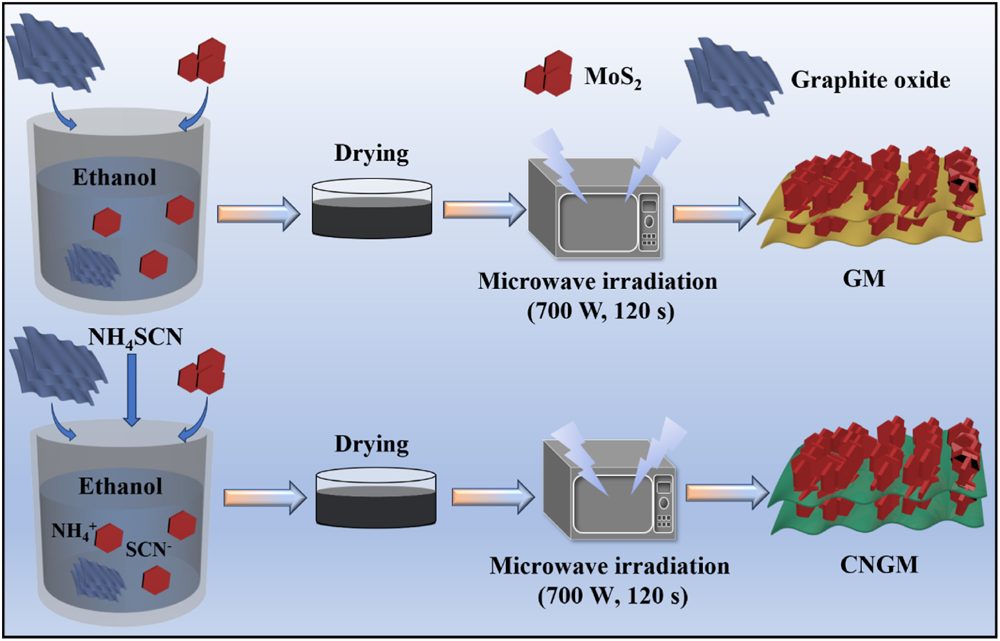

Project
2D Material Composites for Overall Water Splitting

Overview
Hydrogen produced by electrochemical water splitting is a clean, carbon-free fuel, but its large-scale adoption depends on catalysts that are efficient, durable, and inexpensive. Splitting water requires two reactions at once — the hydrogen evolution reaction (HER) at the cathode and the oxygen evolution reaction (OER) at the anode. This project develops bifunctional electrocatalysts built on the two-dimensional support reduced graphene oxide (rGO), which drive both reactions efficiently in a single electrolyzer and reduce reliance on scarce precious-metal catalysts.
Why Reduced Graphene Oxide?
Two-dimensional reduced graphene oxide is an ideal scaffold for water-splitting catalysts because its structure directly addresses the main limitations of conventional electrode materials:
- High conductivity — the graphene network provides fast electron transport to and from active sites.
- Large surface area — the 2D sheets expose abundant sites and anchor the active phase.
- Anti-aggregation support — nanoparticles stay well dispersed instead of clumping, preserving activity over time.
- Heteroatom doping — nitrogen doping tunes the electronic structure and creates additional catalytically active sites.
Composite Systems
Several rGO-based composites were synthesized and tested as bifunctional catalysts for overall water splitting:
- MoC/NiC @ N-doped rGO — a bimetallic carbide composite anchored on nitrogen-doped reduced graphene oxide for simultaneous hydrogen and oxygen production.
- graphitic-C3N4 / rGO / MoS2 — a ternary composite synthesized through a fast, microwave-assisted route, acting as a bifunctional electrocatalyst for water splitting.
- Both systems pair an active transition-metal phase with the conductive rGO support to enhance HER and OER performance together.

Approach
- Synthesis — hydrothermal and microwave-assisted routes to grow the active phase directly on rGO sheets.
- Characterization — XRD, XPS, FE-SEM, and TEM to confirm composition, structure, and morphology.
- Electrochemical testing — HER and OER performance measured through overpotential, Tafel slope, and long-term stability.
- Overall water splitting — the best catalysts assembled into a two-electrode cell to drive both reactions simultaneously.
Key Outcomes
- Bifunctional activity for both HER and OER from a single rGO-supported catalyst.
- Improved efficiency and stability compared with the active phase alone, attributed to the conductive 2D support.
- Demonstrated low-cost, scalable synthesis routes for practical overall water splitting.
Related Publications
- Bifunctional MoC/NiC@N-doped reduced graphene oxide nano electrocatalyst for simultaneous production of hydrogen and oxygen through efficient overall electrochemical water splitting. — View paper
- Microwave-assisted facile synthesis of graphitic C3N4/reduced graphene oxide/MoS2 composite as the bifunctional electrocatalyst for electrochemical water splitting. — View paper